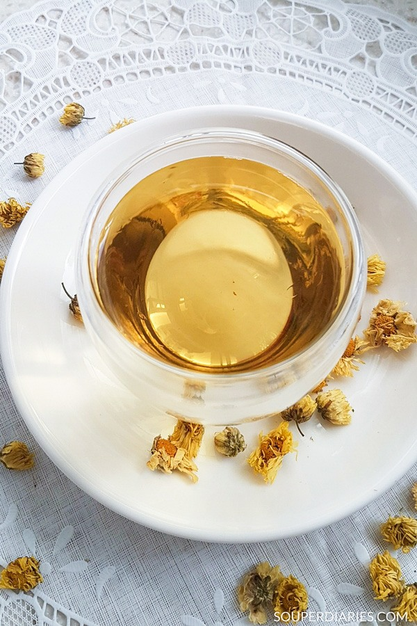

<-Back
Ginseng Chrysanthemum

How to Brew
Ingredients
- 50g Dried Chrysanthemum
- 30g American Ginseng
- 2L Water
- 60g Brown Sugar
Steps
- Add Chrysanthemum and Water to a pot and heat till boil. Let Chrysanthemum steep for 1 min then remove
- Lower the boil to a simmer and add the ginseng into the pot. Simmer for 5 minutes, then remove ginseng.
- Add sugar as you prefer.